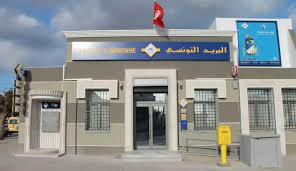
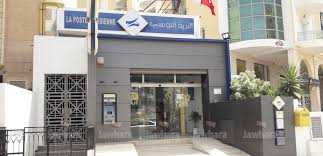
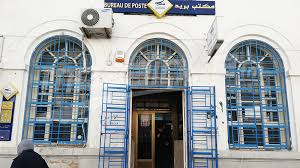

À Propos d'E-Poste Tunisie
E-Poste Tunisie est le service postal national, offrant une couverture étendue à travers le pays avec des bureaux fixes et mobiles pour desservir toutes les régions.
Carte des Bureaux Postaux
Liste des bureaux principaux par gouvernorat :
- Tunis : Bureau Central, ouvert 8h-17h (été) / 8h-16h (hiver). Adresse : Avenue Habib Bourguiba, Tunis.
- Sfax : Bureau Principal, ouvert 8h-17h (été) / 8h-16h (hiver). Adresse : Rue de la République, Sfax.
- Sousse : Bureau Central, ouvert 8h-17h (été) / 8h-16h (hiver). Adresse : Avenue du 7 Novembre, Sousse.
- Bizerte : Bureau Principal, ouvert 8h-17h (été) / 8h-16h (hiver). Adresse : Place de la Kasbah, Bizerte.
- Gabès : Bureau Central, ouvert 8h-17h (été) / 8h-16h (hiver). Adresse : Rue Ibn Khaldoun, Gabès.
Bureaux Postaux Mobiles
Découvrez nos bureaux postaux mobiles qui desservent les régions éloignées :
- Bureau Mobile 1 : Itinéraire : Tunis - Sousse. Horaires : 9h-15h. Services : Envoi de colis, retraits de pensions.
- Bureau Mobile 2 : Itinéraire : Sfax - Gabès. Horaires : 10h-16h. Services : Paiements, dépôts d'argent.
- Bureau Mobile 3 : Itinéraire : Bizerte - Béja. Horaires : 9h-14h. Services : Services postaux complets.
- Bureau Mobile 4 : Itinéraire : Kairouan - Monastir. Horaires : 8h-13h. Services : Assistance aux retraités.
Images des Bureaux



Pour plus d'informations ou pour localiser un bureau près de chez vous, visitez notre site officiel ou contactez le service client au 80 10 10 10.